scSidekick is a single-cell RNA-seq and spatial transcriptomics toolkit built on top of Seurat. It extends the ecosystem in four specific directions that existing companion packages don’t fully cover: honest-by-default comparison plots with shared scales, one consistent faceting grammar spanning both visualization and downstream analysis, project-wide color and layout consistency registered once on the object, and the same calls scaling without modification from a pilot study to a multi-million-cell atlas via BPCells streaming.
It is fully interoperable with scCustomize, SCpubr, and dittoSeq; the functions here are not alternatives to those packages but additions targeted at gaps they leave.
~~~~~~~~~~~~~~~~~~~~~~~~~~~~~~~~~~~~~~~~~~~~~~~~~~~~~~~
___ _ _ _ __ _ _
___ __ / __| (_) __| | ___ | |/ / (_) __ | |__
(_-< / _| \__ \ | | / _` | / -_) | ' < | | / _| | / /
/__/ \__| |___/ |_| \__,_| \___| |_|\_\ |_| \__| |_\_\
Your New Best Friend in Analysis and Visualization
✨ It's a good day to make pretty figures! ✨
~~~~~~~~~~~~~~~~~~~~~~~~~~~~~~~~~~~~~~~~~~~~~~~~~~~~~~~
✨ What scSidekick Provides
Every example below is reproducible from public data (data-raw/make_readme_figures.R).
1 · Shared, accurate color scales across split feature panels
Splitting a feature plot by a condition is the single most common comparison in single-cell work — and by default a single legend is placed ambiguously across panels, and that shared scale can be lost when a custom palette is supplied. PlotFeaturePlots() locks one shared, labeled color scale across every panel so the comparison is honest. No per-call workarounds needed.
Panel A — split by a single variable:
| Without shared scale — ambiguous comparison | PlotFeaturePlots — one shared, labeled scale |
|
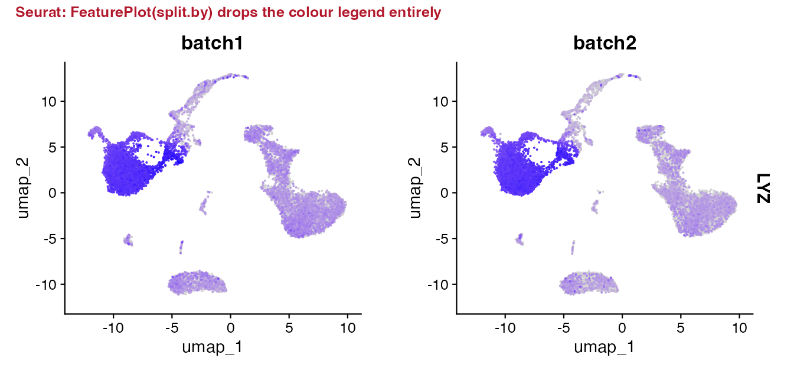 |
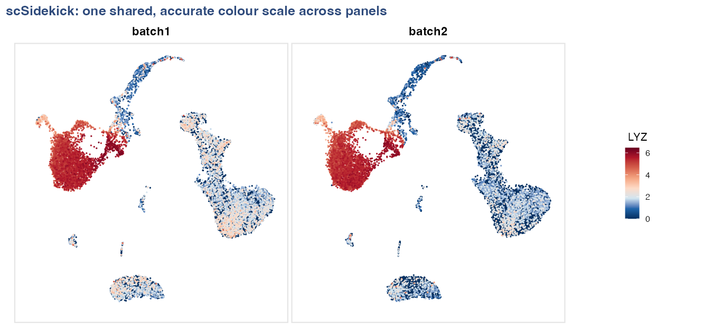 |
# Panel A: split by donor — one shared color bar
PlotFeaturePlots(bmcite, features = "LYZ", split.by = "donor")Panel B — split by lane, arranged in rows by donor (metadata layout):
When samples cross two variables (e.g., lane × donor), row.by adds a second faceting dimension and layout_method = "metadata" aligns panels by their actual metadata coordinates rather than wrapping them in arbitrary order — so the grid itself tells the story.
# Panel B: lane on columns, donor on rows, positionally aligned
PlotFeaturePlots(bmcite, features = "LYZ",
split.by = "lane", row.by = "donor",
layout_method = "metadata")
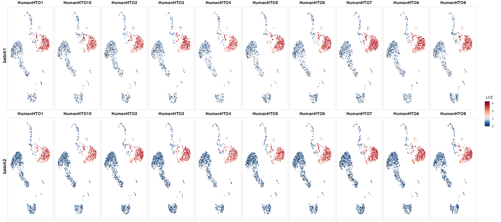
2 · Gene-expression dot plots, organized for comparison
SplitDotPlot() — expression first, organized by gene group
Standard Seurat split dot plots color each dot by the split identity rather than by expression and interleave rows, making it hard to read expression magnitude. SplitDotPlot() keeps color = expression, size = % expressed, organizes genes into labeled cell-type blocks, and facets cleanly by condition so every cluster is comparable across conditions at a glance.
| Standard split dot plot — expression not directly visible | SplitDotPlot — blocks, facets, one expression scale |
|
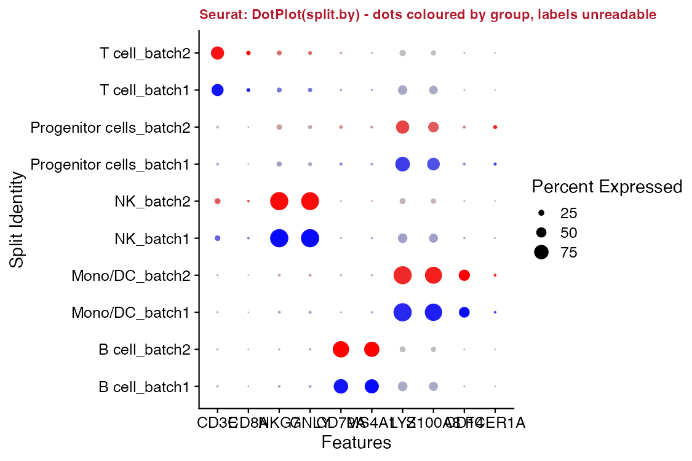 |
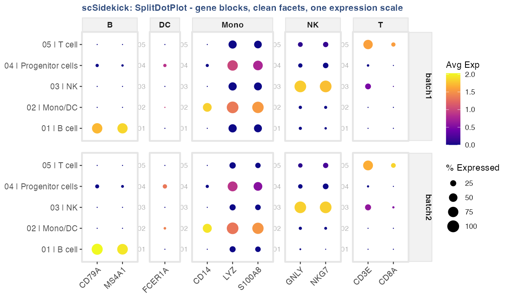 |
SplitDotPlot(bmcite, markers_df = markers_df,
group.by = "celltype.l1", split.by = "donor")
FastDotPlot() — find gene programs without knowing gene names
FastDotPlot() adds two capabilities that matter when exploring large gene sets: a regex pattern selects all matching genes automatically (no manual list required), and k_genes slices the gene dendrogram into labeled programs so co-regulated blocks become visible immediately.
# All CD1x/CD2x genes, automatically split into 3 co-expression patterns
FastDotPlot(bmcite,
pattern = "^CD[1-2]",
group.by = "celltype.l1",
k_genes = 3)
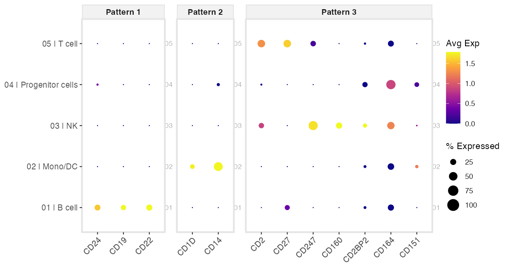
Pair with FastDotPlot2() to add an automatic EnrichR annotation header above each gene-pattern panel — pattern → pathway in one call:
FastDotPlot2(bmcite, pattern = "^CD[1-2]", group.by = "celltype.l1",
k_genes = 3, EnrichR_DB = "CellMarker_2024")3 · Multi-cohort cell-cell communication — keep every cohort visible
CompareCellChat() places every cohort on one shared layout with the same node colors and group order in every panel, so you compare presence and absence side by side. Cohorts where a pathway is absent get a blank panel rather than being silently dropped — absence is often the finding.
Standard comparison — cohorts lacking a pathway are silently omitted
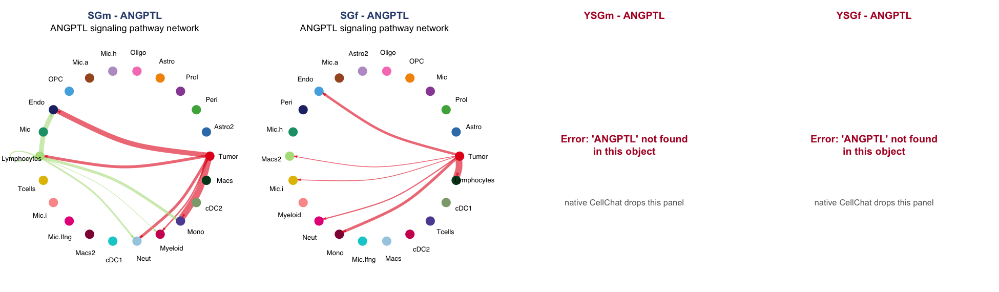
CompareCellChat — every cohort shown; same colors, same order, absence visible
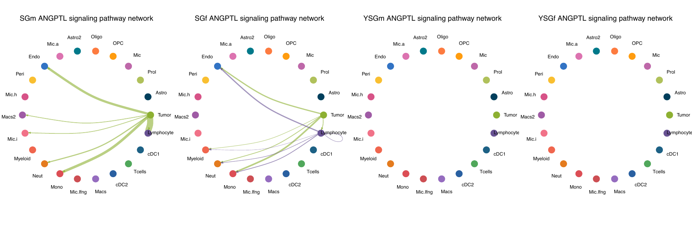
CompareCellChat(
list(SGm = "SGmCellChat.rds", SGf = "SGfCellChat.rds",
YSGm = "YSGmCellChat.rds", YSGf = "YSGfCellChat.rds"),
output_dir = "./Figures/CellChat")4 · Atlas-scale metadata, summarized in one line
PlotMetaSummary() computes cell-type composition across multiple grouping levels — counts and percentages — in a single expression:
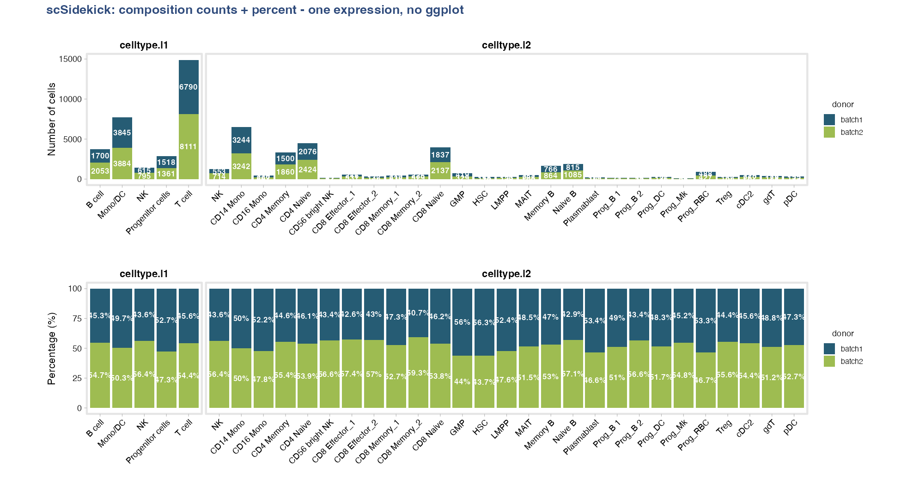
PlotMetaSummary(obj, variables = c("celltype.l1", "celltype.l2"),
fill_variable = "donor", count_unit = "cells") +
PlotMetaSummary(obj, variables = c("celltype.l1", "celltype.l2"),
fill_variable = "donor", count_unit = "cells", percent = TRUE)The same function handles a 1.78M-cell, 153-column clinical atlas: point it at a data frame with id_column = "Donor.ID" and it collapses cells to donors and lays out the clinical variables — no manual aggregation:
| 153 raw metadata columns — hard to interpret at scale | 83 donors summarized in one line |
|
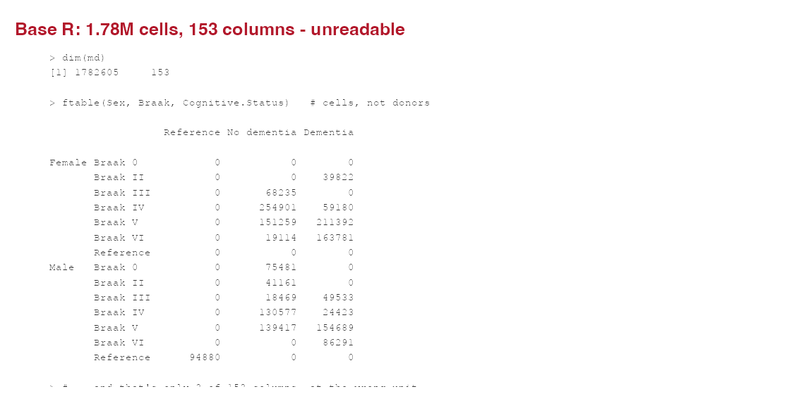 |
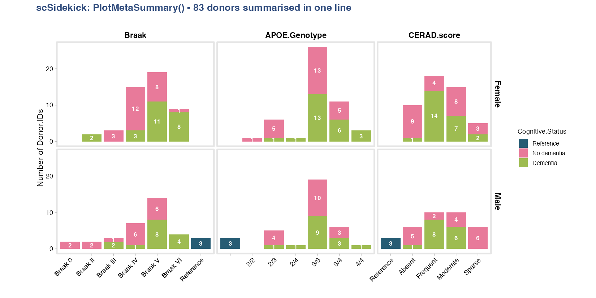 |
PlotMetaSummary(md, id_column = "Donor.ID",
variables = c("Braak", "APOE.Genotype", "CERAD.score"),
fill_variable = "Cognitive.Status", row_variable = "Sex")5 · Methods paragraph + figure legends, written as you go
Every figure-writing function drops a plain-text legend sidecar (.legend) next to the figure file as it’s saved. ExtractMethods() reads the Seurat command history into a ready-to-paste methods paragraph. Nothing to reconstruct months later.
# Auto-written next to every figure, e.g. "LYZ_donor featuremap bmcite.legend":
# UMAP feature plot showing expression of LYZ in bmcite, split by donor.
# Color scale: low (dark blue) to high (dark red), capped at the per-gene
# maximum (6.46). Each panel represents one donor level; legend shows the
# shared color bar.
ExtractMethods(obj)$methods_text
#> Single-cell RNA-seq (scRNA-seq) data (30,672 cells, 17,009 genes; assay: RNA)
#> were analyzed using Seurat. Gene expression counts were normalized using
#> LogNormalize (scale factor 10,000) and 2,000 highly variable genes were
#> identified using the vst method. PCA was performed (30 PCs computed). ...6 · Analysis to slides in one call
create_analysis_pptx() walks a figures directory (including per-subfolder parameters) and assembles a PowerPoint deck — aspect-ratio-preserving figure placement, section ordering, the works:
create_analysis_pptx(output_dir = "./Figures", object_name = "MyProject")7 · Gene-set enrichment, with keyword pathway search
One call runs the ranking, GSEA against Hallmark / KEGG / Reactome / WikiPathways, and the enrichment plots:
RunGSEA(obj, group.by = "seurat_clusters", output_dir = "./Figures/Pathways")Nested comparisons are two arguments. split.by runs an independent GSEA per level — one per major lineage, comparing subtypes within it:
RunGSEA(obj,
group.by = "celltype.l2", # subtypes compared
split.by = "celltype.l1", # nested: one run per lineage
output_dir = "./Figures/Pathways")No need to know exact pathway names. Pull pathways by keyword, then see which genes drive them:
PlotGSEAEnrichment(output_dir = "./Figures/Pathways",
search_terms = list(c("interferon", "response"), "apoptosis"))
VisualizeLeadingEdge(obj, gsea_files = "./Figures/Pathways",
search_terms = "interferon", group.by = "celltype.l1")For sample-level robustness or per-cell scores on a large object, RunGSEA_pseudobulk() and RunSCssGSEA() stream BPCells / sketched assays.
PlotPathwayButterfly() puts two contrasts back-to-back on a shared pathway axis, making up- vs. down-regulated programs immediately comparable across conditions:
PlotPathwayButterfly(gsea_result,
left_contrast = "Disease_vs_Control",
right_contrast = "Treated_vs_Control",
output_dir = "./Figures/Pathways")8 · Gene co-expression at single-cell, pseudobulk, or group resolution
CorrelateGene() computes correlation between a gene of interest and every other gene, separately within each cell type. Three resolution levels address different statistical needs: single-cell (fast, exploratory), pseudobulk (donor-level log-CPM, most valid), or group-mean. Add compare_by to run independent correlations within each level of a metadata variable and see which genes are correlated in one group but not another.
# Pseudobulk-level Spearman correlation for SPP1 across microglia subtypes
cor <- CorrelateGene(obj,
gene = "SPP1",
group_by = "CellType",
level = "pseudobulk",
sample_column = "Donor.ID")
# Side-by-side comparison across a condition
cor <- CorrelateGene(obj, gene = "SPP1", group_by = "CellType",
level = "pseudobulk", sample_column = "Donor.ID",
compare_by = "Diagnosis")
PlotCorrelation(cor, top_n = 20)9 · Survival analysis from any TCGA or TARGET cohort
LoadTCGA() downloads and caches expression + clinical data for any TCGA or TARGET project in one call. SurvPlot() stratifies patients by expression level of any gene (or a custom signature) and produces publication-ready Kaplan-Meier curves with log-rank p-values.
tcga <- LoadTCGA("TCGA-GBM")
# Survival stratified by SPP1 expression
SurvPlot(tcga,
gene = "SPP1",
event_col = "vital_status",
time_col = "days_to_death",
output_dir = "./Figures/Survival")
# Explore available clinical columns before choosing event/time columns
SurvMetaSummary(tcga)10 · Copy number variation from scRNA-seq
RunInferCNV() and RunCopyKAT() wrap the full inferCNV / CopyKAT workflows – gene-order table generation, inference, post-processing, and figure output – and write CNV scores back to the Seurat object as new metadata columns (CNV_score, CNV_Prediction, per-chromosome proportions).
obj <- RunInferCNV(obj,
cell_type_col = "Assignment",
ref_group_names = c("T cells", "B cells", "Macrophages"),
output_dir = "./Figures/CNV")
obj <- RunCopyKAT(obj, output_dir = "./Figures/CNV")11 · Gene expression programs with consensus NMF
RunCNMF() wraps the full cNMF pipeline (Kotliar et al. 2019) through reticulate: HVG selection, NMF factorization across K values, and the k-selection diagnostic plot. After choosing K from the elbow, GetCNMFPrograms() extracts the consensus result and GetCNMFTopGenes() returns the top-weighted genes per program for downstream annotation.
# Stage 1: run and inspect k-selection plot
RunCNMF(obj, output_dir = "./CNMF", k_range = 2:10)
# Stage 2: extract programs at the chosen K
prog <- GetCNMFPrograms(output_dir = "./CNMF", k = 7)
top <- GetCNMFTopGenes(prog, n = 30)12 · Transcription factor activity with upstream regulator analysis
RunURA() infers TF activity from pseudobulk expression via decoupleR + CollecTRI, then optionally tests for differential activity between condition pairs (limma with 3+ donors, t-test otherwise). One call produces per-cell-type activity matrices, a bubble summary plot, and CSV results.
RunURA(obj,
group.by = "CellType",
donor.by = "Donor.ID",
contrast.by = "Diagnosis",
output_dir = "./Figures/URA")One faceting vocabulary, everywhere
The same three arguments work across every function — plots and analyzes:
-
group.by— what defines a group (color, x-axis, the comparison) -
split.by— make one panel / one independent run per level -
row.by— arrange panels along a second dimension
PlotDimPlots(obj, group.by = "CellType", split.by = "Sample")
PlotFeaturePlots(obj, features = "CD3E", split.by = "Condition")
SplitDotPlot(obj, markers_df = m, group.by = "CellType", split.by = "Condition")
PlotMetaSummary(obj, variables = "CellType", fill_variable = "Group", row_variable = "Sex")
RunGSEA(obj, group.by = "celltype.l2", split.by = "celltype.l1")
RunCellChat(obj, group.by = "CellType", split.by = "Condition")Same words whether you are drawing a UMAP, a dot plot, or running GSEA and CellChat. Learn the grammar once; it carries over to every step.
Why scSidekick
- Honest-by-default plots — shared scales and kept legends by design, so comparisons are valid without per-call workarounds.
-
Consistency for free — register colors, factor levels, and defaults once with
PrepObject(); every downstream function reads them, so an entire project shares one palette and layout. - Reproducibility captured passively — a legend sidecar for every figure, an auto-drafted methods paragraph, a one-call PPTX builder, and a session logger that turns a working session into a clean script.
- Scales to big data — feature plots, pseudobulk, and pathway scoring stream BPCells / on-disk / Sketch assays; the same one-liners work on a 2M-cell atlas.
Quick start
library(scSidekick)
library(Seurat)
# Register colors, levels, and defaults once:
obj <- PrepObject(obj,
variables = c("Sample", "Group", "seurat_clusters"),
group.by = "seurat_clusters",
split.by = "Sample",
output_dir = "./Figures",
object_name = "MyProject")
# Every downstream function reads those defaults automatically:
PlotDimPlots(obj) # UMAP split by Sample
PlotMetaSummary(obj, variables = "seurat_clusters", # composition at a glance
fill_variable = "Group", count_unit = "cells")
PlotFeaturePlots(obj, features = c("CD3E", "CD79A", "LYZ"))
GroupHeatmap(obj, features = marker_genes)
RunGSEA(obj, group.by = "seurat_clusters")
create_analysis_pptx(output_dir = "./Figures", object_name = "MyProject")What’s inside
Documentation
Full vignettes and function reference at nourabdelfattah.github.io/scSidekick
| Vignette | Topic |
|---|---|
| 01 | Getting started – PrepObject, colors, metadata |
| 02 | Dimensionality reduction |
| 03 | UMAP visualization |
| 04 | Feature expression |
| 05 | Heatmaps & dot plots |
| 06 | Cell annotation |
| 07 | Spatial transcriptomics |
| 08 | Pathway: RunGSEA |
| 09 | Pathway: pseudobulk GSEA |
| 10 | Pathway: single-cell & enrichment |
| 11 | Cell-cell communication |
| 12 | Reporting & utilities |
| 13 | Metadata & composition |
| 14 | Large datasets (BPCells / Sketch) |
| 15 | Survival analysis (TCGA / TARGET) |
| 16 | Co-expression analysis |
| 17 | Copy number variation (inferCNV / CopyKAT) |
| 18 | Gene expression programs (cNMF) |
| 19 | Upstream regulator analysis (URA) |
| 20 | Pseudotime & trajectory analysis (Slingshot) |